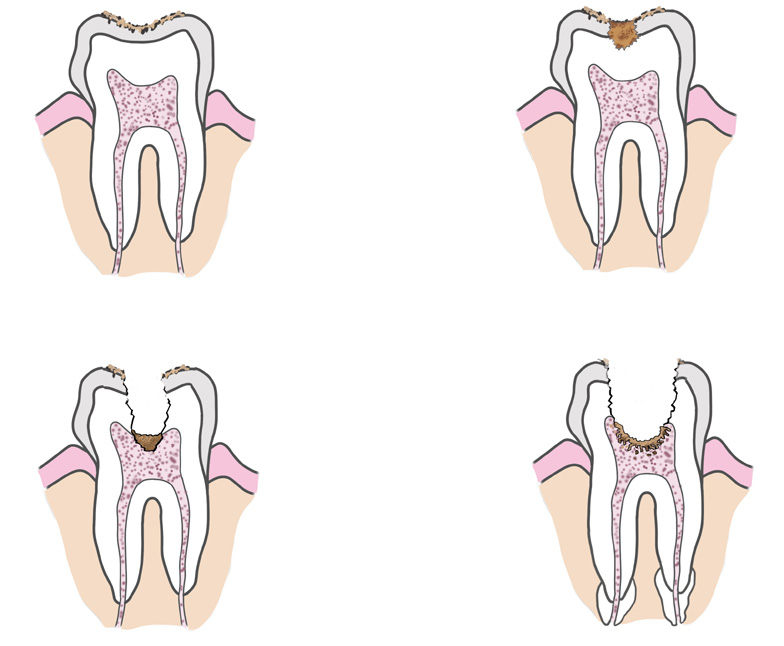

54
Student’s Book - Form Two
Biology for Secondary Schools
Several
common
disorders
and
diseases affect various parts of the digestive system such as the teeth, oesophagus, stomach, ileum, and colon. Examples include dental caries, heartburn, indigestion, stomach ulcers, constipation, and flatulence.
Dental caries
This is usually known as tooth decay.
It occurs when bacteria destroy the outer part of the tooth or enamel. Also, it can occurs through drinking water with a high fluoride concentration.
Dental caries develop over time. When there are food remains in the mouth, bacteria present in the mouth combine with saliva with food remains to form plaque. This is a sticky white substance often found between teeth. The plaque begins to form within 20 minutes after eating food. Bacteria in the plaque convert
food
remains,
especially
sugar and starch into lactic acid. The produced acid dissolves the tooth enamel, forming a cavity or a hole in it, which exposes the softer inner part or the dentine. If this cavity or hole is not treated, it reaches the pulp cavity and nerve endings inside the tooth, causing an infection and serious pain. Figure
2.9 shows the development of dental caries.

(a) Enamel caries
(c) Pulp affected
(b) Dentine caries
(d) Abscess
Figure 2.9: Development of dental caries
Symptoms of dental caries
(i)
Toothache, especially after eating
sweet, cold, or hot foods.
(ii) Gums bleeding, especially during
teeth brushing.
(iii) Development of holes or cavities in the teeth.
Prevention and control of dental caries
(i)
Brush teeth regularly with
recommended toothpaste, at least
twice a day to get rid of plaque.
(ii) Use dental floss when necessary to
remove the plaque between your teeth.
(iii) Wash your mouth after taking sugary foods like cakes,
chocolates, and biscuits.
(iv) Minimise your intake of sugary
foods. This helps to limit the amount of acid produced by
bacteria, hence the minimum risk
of dental decay.
08/04/2026 10:18:15